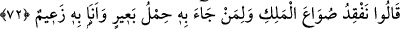
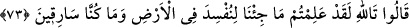

işittikleri şeyden rahatsız olduklarını göstermektedir.
72. “Kralın su tasını arıyoruz. Onu getirene bir deve yükü (buğday) var.” dediler.
(İçlerinden biri:) “Ben buna kefilim.” dedi.
Yûsuf’un kardeşlerine cevaben: “Kralın su tasını arıyoruz.” Yûsuf’un adamları, yine
de kardeşlerin önceki durumlarını bildiklerinden ötürü edebe riâyet edip onların yükü
arasında tesadüfen kalmış olabileceği izlenimini vererek şöyle dediler: “Onu” biz
arama yapmadan kendisi ortaya çıkararak “getirene” el-Bahr’da belirtildiğine göre su
tasını çalanı gösterip rezil edene “bir deve yükü” buğday “var.” dediler.”
İçlerinden biri: “Ben buna kefilim.” dedi.” ‘Tası getirip iâde edene bunu
ödeyeceğim. Çünkü kral bu konuda beni suçluyor.’ Bu ifade münâdîye aittir.
et-Te’vîlâtü’n-Necmiyye’de der ki: Burada, hayvan yiyeceğinden ibaret olan deve
yükünü taşımaya ehil olanların hükümdarların su kaplarından birini taşımaya ne zaman
hak kazanacaklarına işaret ediliyor.
73. (Kardeşler:) “Allah’a andolsun ki, bizim yeryüzünde fesat çıkarmak için
gelmediğimizi siz de biliyorsunuz. Biz hırsız da değiliz.” dediler.
Kardeşler: “Allah’a andolsun ki, bizim yeryüzünde fesad çıkarmak için
gelmediğimizi siz de biliyorsunuz.”
“” ifadesi, kendilerine böyle bir fiilin isnâd edilmesinden duydukları şaşkınlığı
dile getiren bir kasemdir. Yâni söylediklerinize şaşmamak mümkün değil. Dindar ve son
derece emin kişiler olmamızdan ötürü, bize isnâd ettiğiniz bu suçtan ne kadar uzak
olduğumuzu apaçık bir sûrette anlamış olmalısınız. Bu durumda nasıl olur da bize: “Siz
hırsızsınız” diyebilirsiniz.
“Fesat çıkarmak için” ifadesi, ‘hırsızlık yapmak için’ mânâsındadır. Çünkü hırsızlık,
fesad türlerinin en büyüklerindendir.
“Biz hırsız da değiliz.” dediler.” Yani biz hırsızlık fiiliyle hiçbir zaman anılmadık.
Onlar görevlilerin bunu bildiklerine hükmettiler. Çünkü kendilerinin görünen hallerini
biliyor olmaları, gizli hallerini de bilmelerini gerektirir.